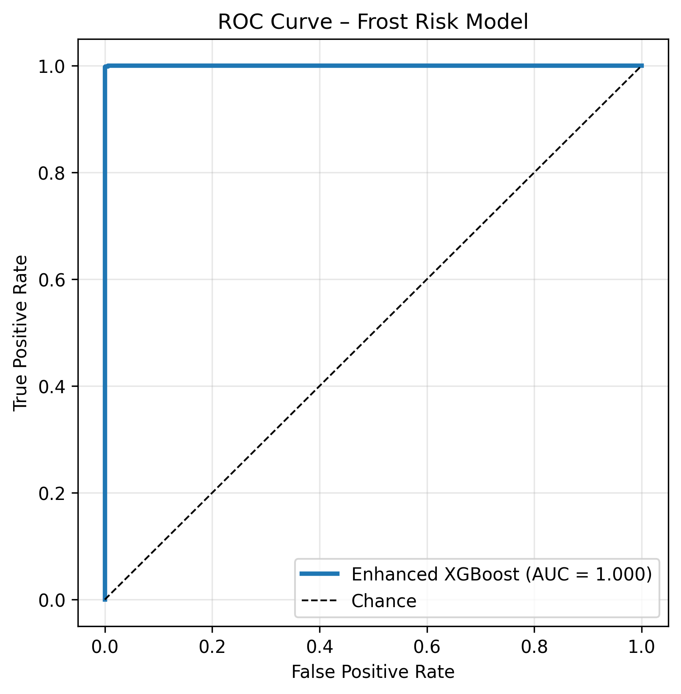
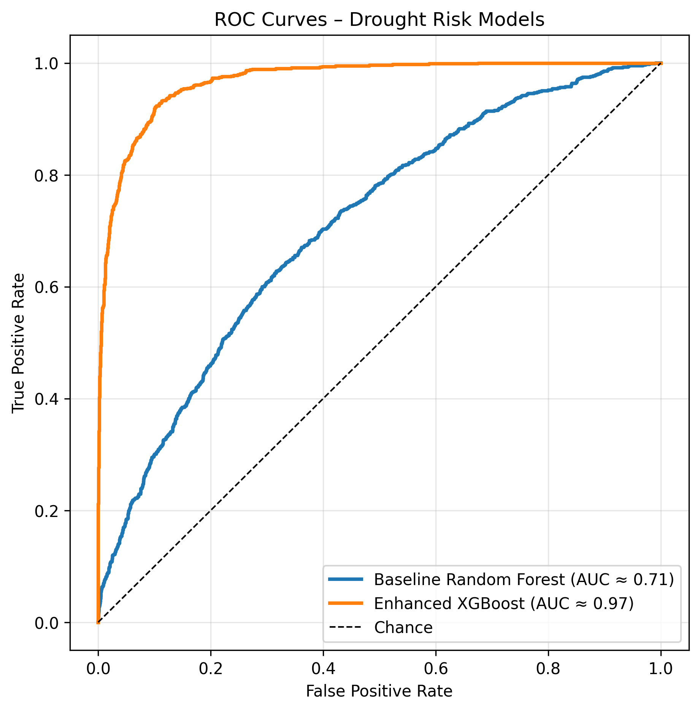
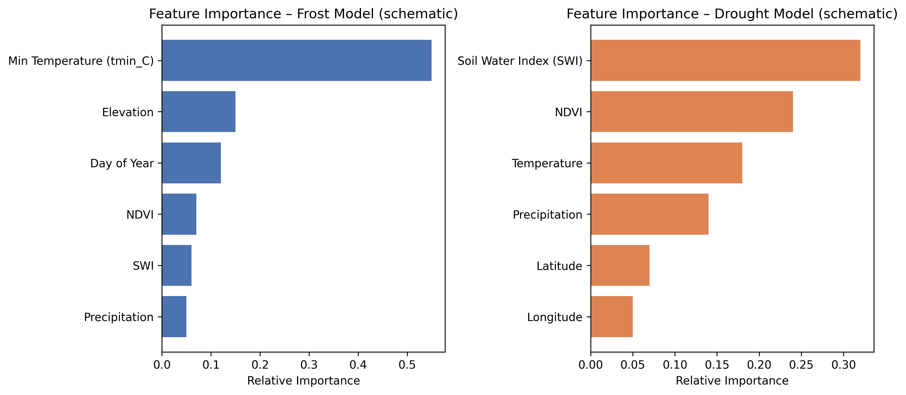

Frost & Drought Prediction with ML
Project overview



This project delivers a high-resolution, production-ready system for forecasting localized agricultural climate hazards, specifically frost and drought, using a fusion of satellite imagery, environmental time series, and advanced machine learning. Designed for real-world deployment in resource-limited agricultural settings, the pipeline integrates physics-aware features, interpretable models, and an interactive interface for real-time decision support.
The core dataset integrates open-access climate inputs: GRIDMET surface air temperature, Copernicus NDVI (Normalized Difference Vegetation Index), Copernicus Soil Water Index (SWI), and drone-collected thermal and multispectral imagery. These were transformed into a unified, daily-resolution time series spanning 2020–2025. Preprocessing included timestamp alignment, forward-filling and interpolation, normalization (to a 0–1 range), and unit standardization. Frost and drought labels were generated using percentile-based thresholds on temperature and soil moisture, simulating risk classification in data-sparse agricultural settings.
Two classes of machine learning models were implemented: tabular ensemble models (Random Forest and XGBoost) and spatio-temporal deep learning architectures. For the latter, ConvLSTM networks were trained on sequences of multi-channel satellite imagery and meteorological inputs, capturing both spatial and temporal dependencies such as evolving drought stress or frost front movement. These models dramatically improved generalization and regional transferability, especially in complex terrain or highly seasonal environments.
Model evaluation used a full suite of metrics including accuracy, precision, recall, F1 score, ROC-AUC, and confusion matrices. Validation strategies included time-based splitting and walk-forward cross-validation to preserve temporal order and simulate deployment. Frost models achieved near-perfect performance (AUROC > 0.99), while drought models reached high scores only after incorporating vegetation and soil moisture dynamics—XGBoost and ConvLSTM both exceeded 0.92 AUROC on test data.
To ensure interpretability, SHAP analysis was applied to the ensemble models, confirming that temperature and seasonal features dominated frost predictions, while SWI, NDVI, and heat stress were key for drought classification. Deep learning outputs were visualized with saliency maps, identifying spatial patterns the ConvLSTM used to anticipate hazard onset. Overfitting was controlled via early stopping, regularization, and constrained model depth, with final evaluations performed on held-out data.
The entire pipeline is optimized for both GPU-enabled local environments and scalable university cluster deployments. Model training, evaluation, and inference can be distributed, enabling fast retraining as new regions or sensor types are added. The user interface, built in Streamlit, allows real-time simulation of forecast scenarios, visualization of temporal and spatial data, and mobile-friendly risk alerts tailored to specific farm plots.
By integrating satellite data, drone sensing, tabular machine learning, and spatio-temporal deep networks into a unified, explainable system, this project sets a new standard for real-time microclimate forecasting. It provides a scientifically grounded, field-deployable platform for climate adaptation in agriculture, bridging the gap between research-grade climate intelligence and practical farm-level action.